<!DOCTYPE html>
<html lang="en">
<head>
	<meta charset="UTF-8">
	<title>c语言</title>
</head>
<body>
	<strong>1.c语言介绍</strong>
	<pre>
		#include <stdio.h> /*头文件,预处理命令*/
		int main()      /*主函数名称.主函数类型是int.主函数是c语言中的唯一入口。*/
		{
			printf("Hello World!");    /*printf()格式输出函数*/
			return 0;    /*函数返回值*/
		}
	</pre>
	<strong>2.书写规范</strong>
	<ol>
		<li>一个说明或一个语句占一行</li>
		<li>函数体内的语句要有明显的缩进【通常以按下一个Tab为一个缩进】</li>
		<li>括号要成对写</li>
		<li>当一句可执行语句结束的时候末尾要有分号</li>
		<li>代码中的所有符号均为英文半角符号</li>
	</ol>
	<strong>3.c语言注释</strong>
	<ol>
		<li>多行注释/*注释内容*/</li>
		<li>单行注释//注释一行</li>
	</ol>
	<strong>4.标识符</strong>
	<br>
	标识符：编程时给变量或者函数起的名字就是标识符。<br>
	标识符可以是字母（A-Z,a-z）,数字（0-9），下划线（_）组成的字符串，并且第一个字符必须是字母和下划线。
	<ol>
		<li>标识符的长度最好不要超过8位</li>
		<li>标识符是严格区分大小写的</li>
		<li>标识符最好选择有意义的英文单词组成做到“见名知意”。不要使用中文符。</li>
		<li>标识符不能是c语言的关键字。</li>
	</ol>
	<strong>5.变量及赋值</strong>
	<br>
	A.变量就是可以变化的量，每一个变量都有一个名字（标识符）。变量占据内存中的一定的存储单元。使用变量之前必须先定义变量，要区分变量名和变量值是两个不同的概念。<br>
	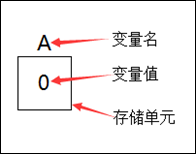<br>
	变量定义的一般形式为：数据类型 变量名;
	多个类型相同的变量：数据类型 变量名,变量名,变量名...;
	<pre>
		int num; //定义了一个整形变量，变量名字叫num
		num = 100; //给num变量赋值为100
		int a,b,c; //同时声明多个变量，然后分别赋值
		a=1;
		b=2;
		c=3;
		printf("%d\n",num); //打印整形变量num
	</pre>
	<small>注意：<ul>
		<li>变量名和标识符的命名规范完全相同。</li>
		<li>在定义中，不允许连续赋值。</li>
	</ul></small>
	B.变量赋值的两种方式：
	<ol>
		<li>1.先声明再赋值</li>
		<li>2.声明的同时赋值</li>
	</ol>
	<pre>
		//先声明再赋值
		int num;
		num = 100;
		//声明的同时赋值
		int x = 10;
	</pre>
	<strong>5.基本数据类型</strong>
	<p>c语言中数据类型可分为：基本数据类型，构造数据类型，指针类型，空类型四大类。</p>
	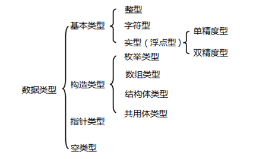
	<h5>整型、实型与字符型</h5>
	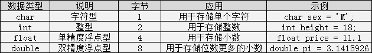
	<p>整型数据是指不带小数的数字。比如：年龄，班级人数，书的总页数。</p>
	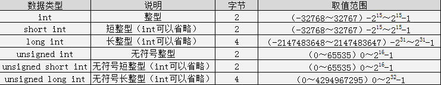
	<p>浮点数据是指带小数的数字。比如：体重，价格，圆周率等。</p>
	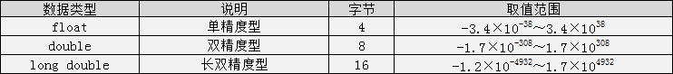
	<small>注：c语言中不存在 字符串变量，字符串只能存在字符数组中！！！</small>
	<strong>6.格式化输出语句</strong>
	<p>格式化输出语句，也可以说是占位输出，是将各种类型的数据按照格式化后的类型及指定的位置从计算机上显示。是有利于计算机能够准确的将我们所要类型的数据给我们。其格式为：printf("输出格式符"，输出项)</p>
	<p>c语言中常用的格式化符：</p>
	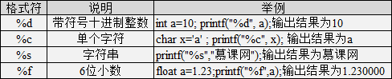
	<br>
	<strong>6.不可改变的常量</strong>
	<p>在程序执行过程中，值不发生改变的量称为常量。c语言中的常量可以分为直接常量和符号常量。</p>
	<p>1.直接常量-也称字面量，是可以直接拿来使用，无需说明的量。</p>
	<pre>
		printf("%d\n",100); //整型常量
		printf("%f\n",3.14);    //实型常量
		printf("%c\n",'A');    //字符常量
		printf("I love C");   //字符串常量
	</pre>
	<p>2.符号常量-用一个标识符来标识一个常量。形式为#define 标识符 常量值 【注意：符号常量的标识符一般使用大写字母，变量的标识符一般习惯使用小写字母。句尾没有分号！】</p>
	<pre>
		#include <stdio.h>
		#define PI 3.14    //定义一个圆周率.注意没有;分号。
		int main()
		{
			printf("圆周率：%f\n",PI);
			return 0;
		}
	</pre>
	<strong>7.自动类型转换</strong>
	<pre>
		char c = 'a';
		int x;
		dobule d;
		float e;
		x = c; //字符类型可以自动转换为整型  97
		d = x;  //整型可以自动转换成浮点类型 97.000000
		e = x;  //整型可以自动转换成浮点类型 97.000000
	</pre>
	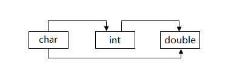
	<br>
	<strong>8.强制类型转换</strong>
	<p>强制类型转换是通过定义类型转换原酸来实现的。一般形式：(数据类型)(表达式)。其作用是把表达式的运算结果强制转换成类型说明符所表示的类型。</p>
	<pre>
		double tempOne = 6.777;
		int tempTwo = (int)tempOne; //强制转换成int类型
		printf("%f\n",tempOne); //6.777000
		printf("%d\n",tempTwo);	//6
	</pre>
	<small>
		注意：
		<ul>
			<li>1.数据类型和表达式都必须加括号。</li>
			<li>2.转换后不会改变原数据的类型及变量值，只在本次运算中临时性转换。</li>
			<li>3.强制转换后的运算结果不遵循四舍五入原则。</li>
		</ul>
	</small>
	<strong>9.运算符号</strong>
	<ul>
		<li>算术运算符</li>
		<li>赋值运算符</li>
		<li>关系运算符</li>
		<li>逻辑运算符</li>
		<li>三目运算符</li>
	</ul>
	<h5>算术运算符</h5>
	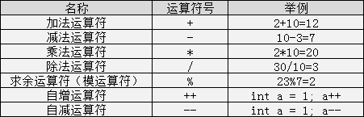
	<ul>
		<li>相除的两个都是整数的话，结果也为整数，小数部分省了。如8/3=2; 而两个数中有一个为小数，结果为小数，如：9.0/2=4.500000;</li>
		<li>取余运算只适合两个整数进行。如10%3=1；运算后的符号取决于被模数的符号。如 (-10)%3 = -1; 10%(-3) = 1;</li>
	</ul>
	<h5>自增自减运算</h5>
	
	<p>注意：无论是a++还是++a都等同于a=a+1,在表达式执行完毕后a的值都自增了1,无论是a--还是--a都等同于a=a-1,在表达式执行完毕后a的值都自减少1。</p>
	<h5>赋值运算符</h5>
	<p>c语言分为简单赋值运算符【=】和复合赋值运算符【+=、*=、/=、%=】。</p>
	<h5>关系运算符</h5>
	<br>
	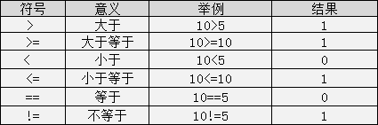
	<small>注意:关系表达式的值是真和假，在c程序用整数0 和1表示。</small>
	<h5>逻辑运算符</h5>
	
	<h5>三目运算符</h5>
	<p>格式为：表达式1?表达式2:表达式3;</p>
	<pre>
		#inclued <stdio.h>
		int main()
		{
			int money = 100;
			int price = 120;
			printf("我们买不买呢：");
			//输出y就买，输出n就不买。
			printf("%c\n",price<=money?'y':'n'); //\n
			return 0;
		}
	</pre>
	<h5>优先级</h5>
	
	<small>优先级为1的优先级最高；优先级为10的优先级最低。</small>
	<br>
	<strong>10、c程序结构语句</strong>
	<h5>if语句</h5>
	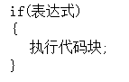
	<h5>if-else语句</h5>
	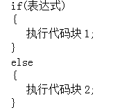
	<pre>
		//判断是闰年还是平年
		#include <stdio.h>
		int main()
		{
			int year = 2014;
			if(year%4==0&&year%100!=0||year%400==0)
			{
				printf("%s\n","今年是闰年");
			}
			else
			{
				printf("$s\n","今年是平年");
			}
			return 0;
		}
	</pre>
	<h5>多重if-else语句</h5>
	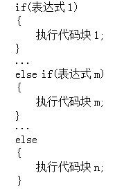
	<pre>
		#include <stdio.h>
		int main()
		{
			int score = 7200;
			if(score>=10000)
			{
				printf("钻石玩家");
			}
			else if(5000<=score<10000)
			{
				printf("白金玩家");
			}
			else if(1000<=score<5000)
			{
				printf("青铜玩家");
			}
			else
			{
				printf("普通玩家");
			}
			return 0;
		}
	</pre>
	<h5>分支结构之嵌套if-else语句</h5>
	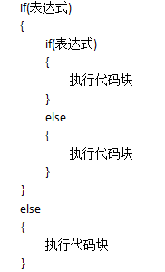
	<pre>
		#include <stdio.h>
		int main()
		{
			int sale = 120;
			int year = 1;
			if(sale>100)
			{
				if(year>2)
				{
					printf("获奖");
				}
				else
				{
				printf("很遗憾，期望你再接再厉")
				}
			}
			else
			{
				printf("很遗憾，期望你再接再厉")
			}
			return 0;
		}
	</pre>
	<h5>循环结构之while循环</h5>
	
	<pre>
		#include <stdio.h>
		int main()
		{
			int sum = 0;
			int i = 0;
			while(i<=100)
			{
				sum+=i;
				i++;
			}
			printf("100以内所有整数之和为：%d\n",sum);
			return 0;
		}
	</pre>
	<h5>循环结构之do-while循环</h5>
	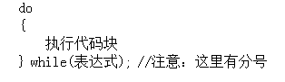
	<small>注意：do-while循环至少要执行一次循环语句</small>
	<pre>
		/*任务
某公司2014年在职人数为200人，以每年20%增长速度不断扩大招工规模，请使用do-while循环计算从2014开始至哪一年招工规模能够突破1000人。*/
		#include <stdio.h>
		int main()
		{
			int number = 200;
			int year = 2014;
			do
			{
				number = number*1.2; //number+number*20%
				year++;
			}while(number<1000);
			printf("到%d年招工规模突破1000人",year);
			return 0;
		}
	</pre>
	<h5>循环结构之for循环</h5>
	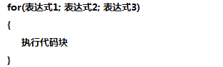
	<pre>
		/*任务1.
体验一下for循环，实现一个10以内的数之和的小程序。*/
		#include <stdio.h>
		int main()
		{
			int sum,num;
			for(num=0;num<=10;num++)
			{
				sum+=num;
			}
			printf("10以内数的和为：%d\n",sum);
			return 0;
		}
		/*任务2
输出所有水仙花数字。所谓“水仙花数”是指一个三位数，其各位数字立方和等于该数*/
		#include <stdio.h>
		int main()
		{
			//定义三位数num,个位数sd,十位数td,百位数hd
			int num,sd,td,hd;
			for(num=100;num<1000;num++)
			{
				sd = num%10;  //个位
				td = (num%100)/10; //十位
				hd = num/100; //百位
				if(num==sd*sd*sd+td*td*td+hd*hd*hd)
				{
					printf("水仙花数字：%d\n",num);
				}
			}
			return 0;
		}
	</pre>
	<h5>循环结构之三种循环比较</h5>
	<ul>
		<li>知道循环次数-for循环</li>
		<li>不知道循环次数-while或者do-while循环。其中有可能一次都不循环用whlie,至少循环一次用do-while;</li>
	</ul>
	<pre>
		/*使用循环计算1-2+3-4+5-6+…-100的值？ */
		#include <stdio.h>
		int main()
		{
		    /* 小伙伴们：
		           选择你们认为最合理的循环结构完成功能吧 */
		    int sum = 0;  //定义计算结果变量sum
		    int i = 1;    //定义循环数字变量i
		    int flag = 1; //定义符号状态变量flag
		    
		    //使用while循环
		    while(i<=100)
		    {
		        i++;
		        flag = i%2==0?1:-1;
		        sum = sum+flag*i;		        
		    }
		    printf("sum=%d\n",sum); 
		    return 0;    
		}
	</pre>
	<h5>循环结构之多重循环</h5>
	<pre>
		/*任务1.
使用双重循环实现输出正三角形，效果如下*/
	#include <stdio.h>
	int main()
	{
		int i,j,k;
		for(i=0;i<5;i++)
		{
			for(j=i;j<5;j++)//输出空格
			{
				printf(" ");
			}
			for(k=0;k<2*i-1;k++)
			{
				printf("*");
			}
			printf("\n");
		}
		return 0;
	}
	</pre>
	<pre>
		/*任务2.使用for循环打印9×9乘法表*/
		#include <stdio.h>
		int main()
		{
			int i,j;
			for(i=9;i>0;i--)
			{
				for(j=1;j<i+1;j++)
				{
					printf("%d*%d=%d ",i,j,i*j);
				}
				printf("\n");
			}
			return 0;
		}
	</pre>
	<h5>结束语句之break语句</h5>
	<pre>
		/*任务
找出0-50之间的所有素数，所谓素数就是只能被1和它本身整除的数字，比如：7，13，23等。*/
		#include <stdio.h>
		int main()
		{
		    int m, n;
		    for(m=2;m<=50;m++)
		    {
		    	for(n=2;n < m;n++)
		    	{
		    		if(m%n==0)
		    		{
		    			break;
		    		}
		    	}
		    	if(m==n) printf("%d\n",m);
		    }
			return 0;    
		}
	</pre>
	<h5>结束语句之continue语句</h5>
	<pre>
		/*任务
计算1到20之间不能被3整除的数字之和。*/
		#include <stdio.h>
		int main()
		{
		    int i, sum;
		   for(i=1;i<=20;i++)
		   {
		       if(i%3==0)
		       {
		         continue;  
		       }
		        sum+=i;
		  }
		   printf("sum=%d",sum);
		    return 0;    
		}
	</pre>
	<h5>分支结构之switch语句</h5>
	<pre>
		#include <stdio.h>
		int main() 
		{
		    int score = 87; //考试分数为87分 
		    score=score/10;
		    switch(score)
		    {
		        case 10:
		        case 9:
		            printf("等级A");
		            break;
		        case 8:
		            printf("等级B");
		            break; 
		        case 7:
		        case 6: 
		            printf("等级C");
		            break;   
		        default:
		            printf("等级D");
		            break;    
		    }
		    return 0;
		}
	</pre>
	<h5>switch与if语句的应用</h5>
	<pre>
		/*任务：请使用switch语句和if...else语句，计算2008年8月8日这一天，是该年中的第几天。*/
		#include <stdio.h>
		int main() 
		{ 
		    /* 定义需要计算的日期 */
		    int year = 2008;
		    int month = 8;
		    int day = 8;
		    int sum,flag;
		    
		    switch(month)
		    {
		        case 1:sum = 0;break;
		        case 2:sum = 31;break;
		        case 3:sum = 59;break;
		        case 4:sum = 90;break;
		        case 5:sum = 120;break;
		        case 6:sum = 151;break;
		        case 7:sum = 181;break;
		        case 8:sum = 212;break;
		        case 9:sum = 243;break;
		        case 10:sum = 273;break;
		        case 11:sum = 304;break;
		        case 12:sum = 334;break;
		        default:printf("一年只有12个月");break;
		                
		    }
		    sum = sum+day;
		    if(year%4==0&&year%100!=0||year%400==0)
		    {
		        flag = 1;
		    }
		    else
		    {
		        flag = 0;
		    }
		    if(flag==1&&month>2)
		    {
		        sum++;
		    }
		    printf("2008年%d月%d日是该年的第%d天",month,day,sum);
			return 0;
		}
	</pre>
	<h5>臭名远扬之goto语句</h5>
	<pre>
		/*求10以内的数之和*/
		#include <stdio.h>
		int main()
		{
			int sum = 0;
			int i = 1;
			LOOP:if(i<=10)
			{
				sum+=i;
				i++;
				//转义到LOOP所在位置继续执行
				goto LOOP;
			}
			printf("sum=%d\n",sum);
			return 0;
		}
		/*实现从控制台输出1-10，使用goto语句，实现当输出完3之后跳出循环体。*/
		
	</pre>
</body>
</html>